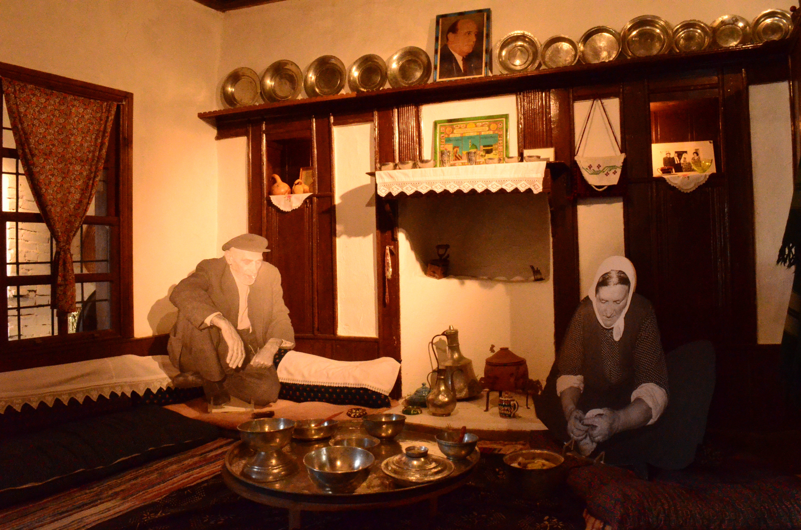

Isparta Süleyman Demirel Demokrasi Ve Kalkınma Müzesi
Müze, Demirel Külliyesi adı verilen DEMİREL KÜLLİYESİ alanında bulunmaktadır. Külliye, 17 dönümlük bir alan üzerine kurulmuş olup, 6 bin metrekare kapalı alanı bulunmaktadır. Külliyenin yapımına 1990 yılında başlandı ve müze 26 Ekim 2014 günü törenle hizmete açılmış olup, Demirel Vakfına bağlı olarak hizmet vermektedir. Restorasyonları tamamlanan iki bina da Şevket Demirel ve Ali Demirel Müzesi olarak hizmete girecektir. Müze, Türk Milli Eğitim Sistemi kapsamında bir Yaygın Eğitim kurumudur. Özel Müze Statüsündedir. Müze, Demirel Vakfı Başkanı Sn. Y. Müh. Şevket Demirel ve kızları Nihan Atasagun, Binhan Kesici ve Neslihan Demirel tarafından inşa ve restore edilmekte, bakım-onarımları yapılmakta, tüm işletimi sağlanmaktadır. Devletimizin herhangi bir katkısı yoktur. Özel Müze deneyim ve birikimleri bulunan Vehbi Koç ve İnan Kıraç Ailesinden gelen bir teknik ekip ile birlikte 2010 yılından itibaren külliye ve müzede önemli ek ve değişikler, teşhir-tanzimler gerçekleştirildi. Müze çevremize, ülkemize ve dünyaya şu önemli iki mesajı vermektedir; • Türkiye Cumhuriyeti Devleti, eğer demokrasiyle, cumhuriyetle yönetilmemiş olsaydı bir köyde dünyaya gelen birinin başbakan ve cumhurbaşkanı olamayacağını göstermekte; böylelikle cumhuriyet ve demokrasinin önemini vurgulamaktadır. • Türkiye, 1950 yılı başlarında ne durumdaydı? Bugüne gelinceye kadar nasıl bir gelişim ve değişim gösterdi, onu anlatmaktadır. Bu gelişim ve değişimi anlatırken de Sn. Süleyman Demirel’in başbakan, siyasi parti genel başkanı ve cumhurbaşkanı olarak yaptığı icraatları göstermektedir. 9. Cumhurbaşkanımız rahmetli Sn. Süleyman Demirel’in anlatımıyla müze; Türkiye cumhuriyetinin cumhuriyet savcısı, müzeye konulmuş bulunan malzemeler de onun delilleridir. Bu malzemelerle yani koleksiyonlarla; Türkiye’nin geri kalmışlıktan bugünkü duruma ve fakirlikten zenginliğe nasıl geldiğini, okur-yazarlığın nasıl yükseltildiğini, çatlamış bozkır toprakların yeşile nasıl dönüştürüldüğünü, karanlıktan aydınlığa nasıl çıkıldığını yani Türkiye’de bu alanlarda nasıl bir savaş verildiğini anlatmaktadır. Bu bilgi ve mesajlar topluma, müzede mevcut koleksiyonlarla ulaştırılmaktadır. Bu koleksiyonlar; - Süleyman Demirel’in kendi kütüphanesinde bulunan 46.000 kitap, - 126.000 fotoğraf, - 8.000 hediye eşya, - 4.000 tablo, - 6.000 teyp ve video kaset, - 500 giyim-kuşam malzemesi ve halı-kilim, - Başka müzelerde ve kütüphanelerde aransa da bulunamayacak, 10.000 klasör dolusu 6 milyon dokümandan oluşmaktadır. Kütüphane; ilk, orta ve lise öğrencilerine değil, yetişkinlere hitap etmektedir. Kütüphaneden dışarıya kitap verilmemektedir. Demirel Külliyesinde bulunan müzeler, kütüphane, cami, namazgâh, gasilhane, restoran, mescit, sanat merkezi, lojman, İslamköy Mezarlığı, helikopter pisti, 9. Cumhurbaşkanımızın kabrinin bulunduğu Çalca Tepe ve göletleri Demirel Vakfının hizmet kapsamındadır. Külliye çevresindeki 9 ev satın alınmış, restore edilmiş, yeni fonksiyonlar verilerek hem külliye ve İslamköy hem de Isparta ve Atabey çevresi için çekim merkezi olabilecek yeni bir kültür ve turizm alanı yaratılmıştır. Satın alınan bu evlerde oturanlara, kendi evlerinin değerlerinin çok üstünde olmak üzere yeni ev ve mandıralar inşa edilmiş; aileler hem İslamköy’den koparılmamışlar hem de külliyeye manevi bağlılıkları sağlanmıştır. Süleyman Demirel Üniversitesi Rektörü ile Demirel Vakfı Başkanının imzaladıkları bir protokol doğrultusunda külliye akademik bir ortama da dönüştürüldü. Üniversitenin “Süleyman Demirel Liderlik Araştırma ve Uygulama Merkezine” külliye içinde bir bina tahsis edildi. Bu Enstitü, öğrencileriyle her hafta külliyede dersler yapmakta; lisans, yüksek lisans ve doktora öğrencileri müzede bilimsel araştırmalar yapabilmektedirler. Müze, hem haftanın 7 günü hem de tüm bayramlarda ziyarete açıktır. Müzeyi, yaz döneminde aylık ortalama 8 bin, kış döneminde ise 2 bin kişi ziyaret etmektedir.


